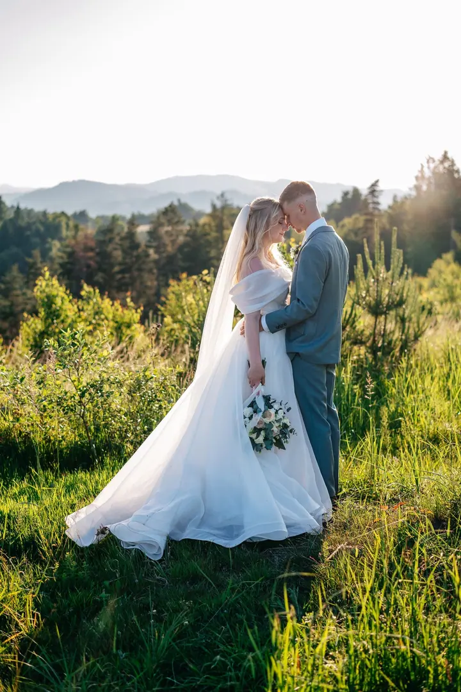
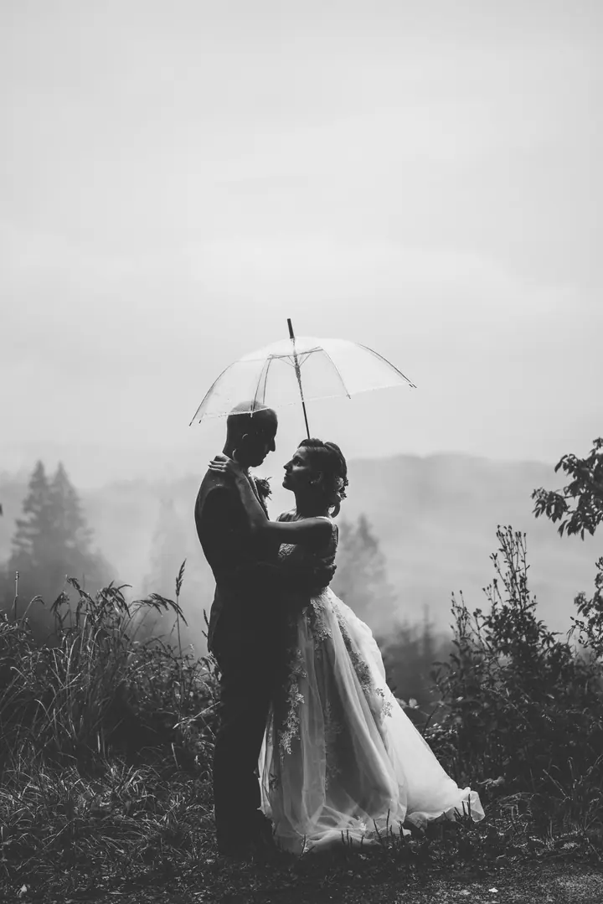
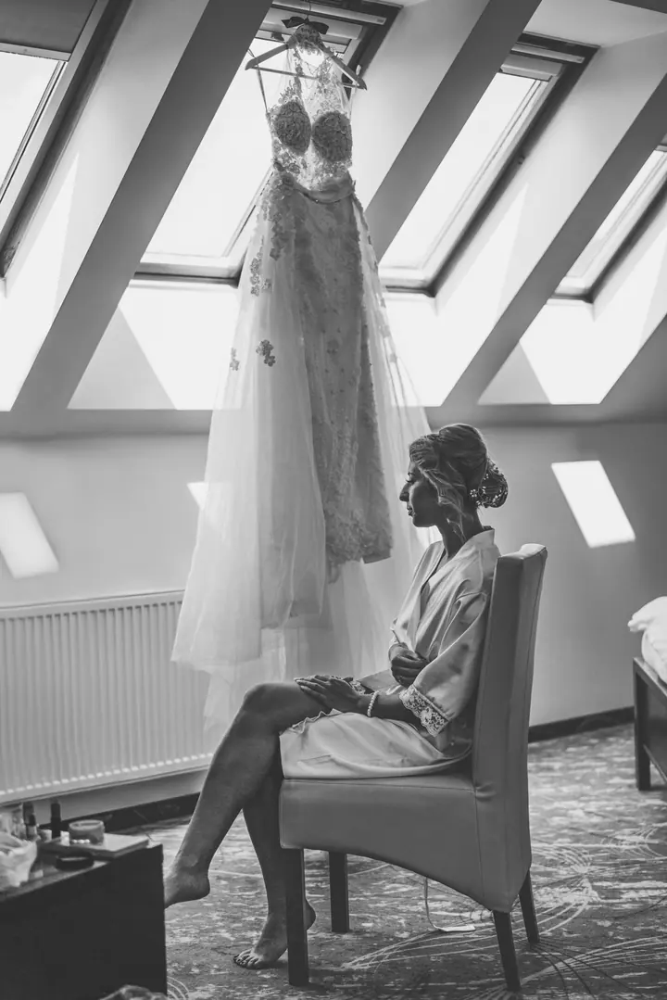

jedna
Svatební focení
Na svatbě naslouchám atmosféře a nechávám ji promluvit skrze fotky. Budu s vámi od začátku do konce dne a hotové fotky vám předám v dárkové krabičce od WOLF fine art.


Jmenuji se Lucie Podzemná a jsem svatební a rodinná fotografka ze Zlínského kraje. Miluju momentky, přirozenost a černobílé fotky. Krásu hledám v obyčejných chvílích, ve smíchu dětí i v letmém doteku, který řekne víc než pár slov.
Více o mně
Co fotím
jedna
Na svatbě naslouchám atmosféře a nechávám ji promluvit skrze fotky. Budu s vámi od začátku do konce dne a hotové fotky vám předám v dárkové krabičce od WOLF fine art.
dvě
Hledám krásu v obyčejnosti, ve smíchu dětí a v letmém doteku. Balíčky začínají na 15 upravených fotografiích s online galerií za 2400 Kč.
Přirozené fotky z doby, kdy čekáte miminko, bez strojených póz. Platí pro ně stejné balíčky jako pro rodinné a párové focení.
Focení pro dva, u kterého si nebudete připadat nesví, i když před objektivem běžně nestojíte. Zajímají mě chvíle, kdy si myslíte, že vás nikdo nesleduje.
Na svatbě naslouchám atmosféře a nechávám ji promluvit skrze fotky.
Za objektivem
Ahoj, já jsem Lucie. K fotografování jsem měla vždycky hodně blízko a dnes je to jedna z věcí, které mě opravdu naplňují. Miluju momentky a přirozenost. Nejradši mám chvíle, kdy si novomanželé myslí, že je nikdo nesleduje.
Neustále se vzdělávám a sbírám zkušenosti. Prošla jsem i svatebními workshopy uznávaných českých fotografů, jako jsou Jan Dikovský, Petr Gebauer a Mia Gebauer. Na svatbě vám budu oporou a v klidu, bez zbytečného stresu zachytím všechno, na co budete chtít vzpomínat i po letech.
Mým snem je fotit novomanžele na vrcholcích hor. Pokud máte podobně „bláznivý“ nápad nebo jen cítíte, že bych mohla být ta pravá pro vás, napište mi. Třeba spolu vytvoříme něco výjimečného.
Lucie
Napíšete mi a domluvíme se na termínu. U svatby ho závazně rezervujete poplatkem 5 000 Kč, který se nakonec odečte z celkové ceny.
Zhruba měsíc před svatbou se sejdeme a projdeme harmonogram celého dne, abych věděla, co mě čeká.
Budu vás doprovázet od začátku až do konce. Naslouchám atmosféře a fotím hlavně přirozené momentky.
Hotové fotky odevzdávám do 5–6 týdnů po svatbě. Dostanete je v elegantní dárkové krabičce od WOLF fine art.
Portfolio
Otázky
Menší balíček s 15 upravenými fotografiemi stojí 2400 Kč, střední s 20 fotografiemi 3000 Kč a velký s 30 fotografiemi 4500 Kč. Každá fotka navíc je za 200 Kč.
U rodinného, těhotenského a párového focení dostanete náhledy do online galerie zhruba za 1–2 týdny. Svatební fotky odevzdávám do 5–6 týdnů po svatbě.
Všechny fotky upravuji ve svém stylu a o barevném nebo černobílém provedení rozhoduji já. Černobílé fotky mám moc ráda, takže pár jich u vás určitě najdete.
Ano, nabízím i dárkové poukazy na focení.
Napište pár vět o tom, co si představujete. · +420 732 763 262